Masternode Requirements¶
To successfully configure your Masternode you will need to have a record of the data that was returned from running the Stratis KeyGen Utility, these are highlighted below.
Passphrase (That was entered into the Stratis KeyGen Utility
FederationKey.DAT
Obtaining Launch Script¶
Once the above steps have been completed and confirmed, you are now able to launch an InterFlux Masternode.
To configure and launch the InterFlux Masternode, you will have to execute a PowerShell Core script provided and signed by Stratis Group Ltd.
This script can be obtained from the below URL
https://www.stratisplatform.com/wp-content/uploads/2022/02/STRAX-Masternode-Launch-Script-v2.zip
Verifying the Launch Script¶
Stratis Group Ltd will digitally sign any PowerShell Script that they provide for operating one of their products.
This can be verified by right-clicking the PS1 script, selecting properties and viewing the digital signature.
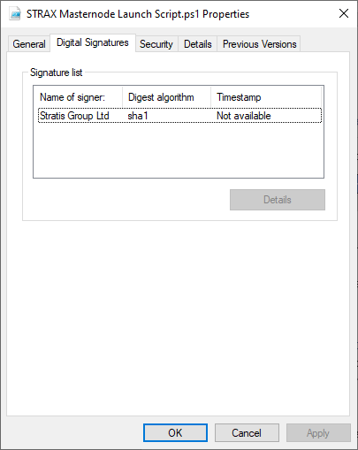{kind=link}
Highlight the listed signature and select “Details”
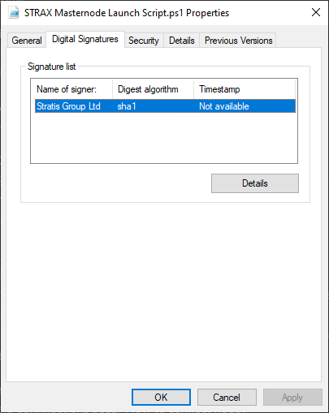{kind=link}
Select “View Certificate”
{kind=link}
Verify the issuing information in the certificate to ensure the authenticity of the PowerShell Script.
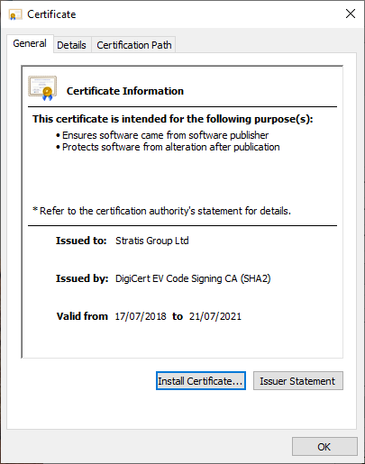{kind=link}
Executing the Launch Script¶
As the script is written in PowerShell Core, it needs to be called from an instance of PowerShell Core and not the standard PowerShell that is shipped with all latest versions of Windows Operating Systems.
To launch PowerShell Core, you will need to invoke it from the command line or run command.
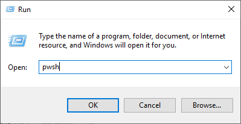{kind=link}
Clicking OK on the above will launch a new instance of PowerShell Core
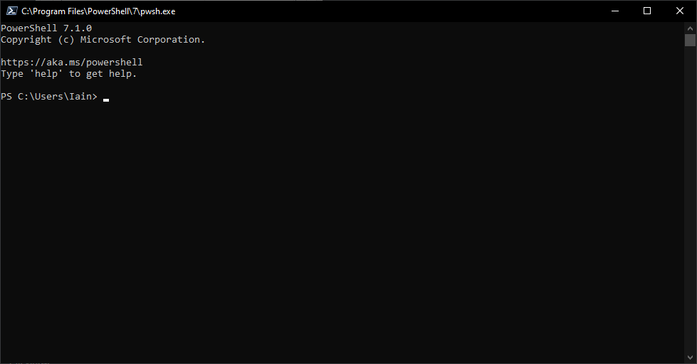{kind=link}
Assuming that the launch script is located on the desktop, you will need to navigate to the desktop, this can be achieved by executing the below command.
Set-Location .\Desktop\
The PowerShell Core script can now be invoked from the PowerShell Core window using the below command.
& '.\STRAX Masternode Launch Script.ps1'
The PowerShell Core instance should look something like the below.
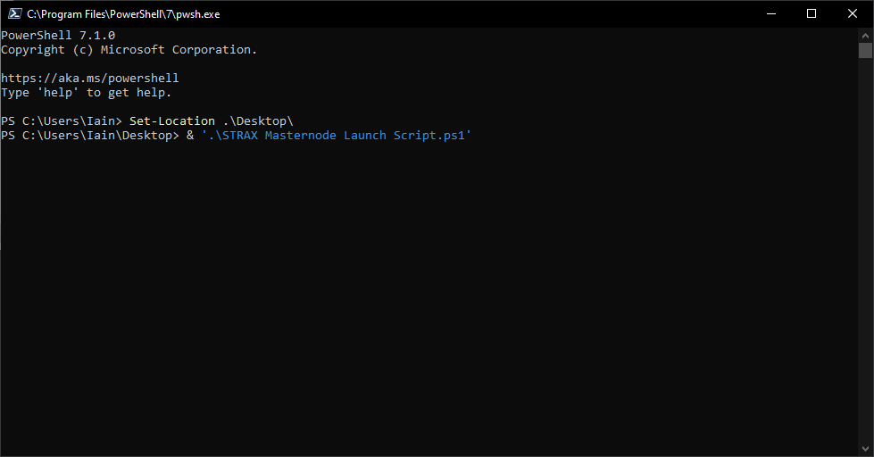{kind=link}
Hit Return/Enter to invoke the PowerShell Core Script.
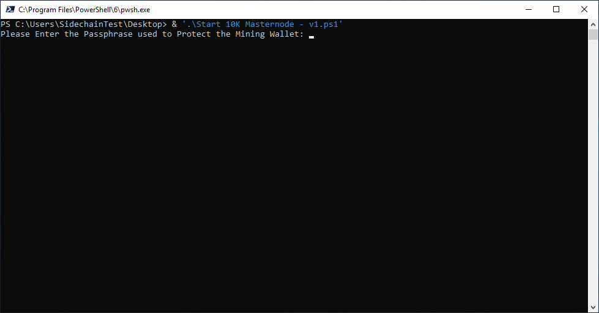{kind=link}
Enter the passphrase that was supplied to the Stratis KeyGen Utility and hit Return/Enter.
You will now be prompted to enter in the full path to the federationKey.dat file. This will then subsequently be copied to the relevant folder. Enter the full path to the federationKey.dat.
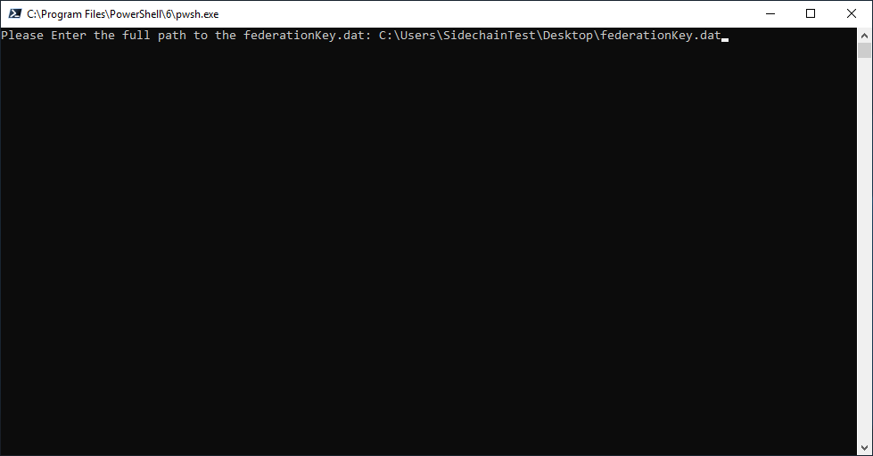{kind=link}
Upon hitting enter, the mainchain node will be launched, the PowerShell Core Script will advise you of the progress.
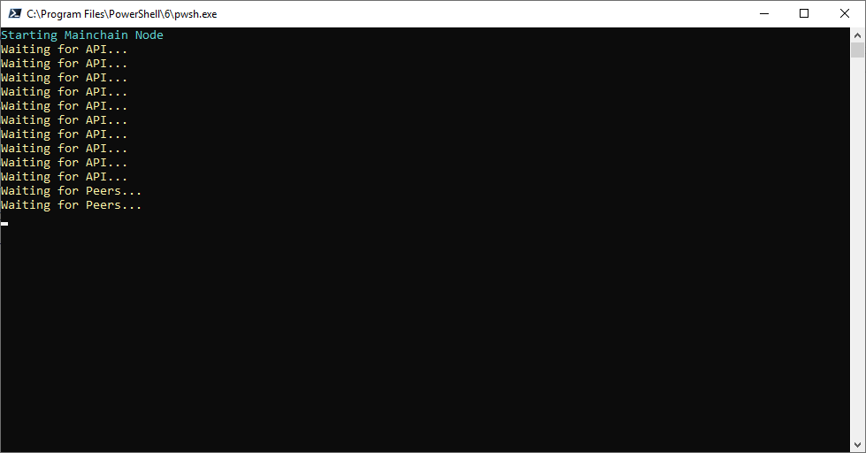{kind=link}
Once peers have been found and the mainchain node has begun syncing the chain, the node will also index all addresses. This can take some time, so please be patient. The PowerShell Core window will advise you of progress.
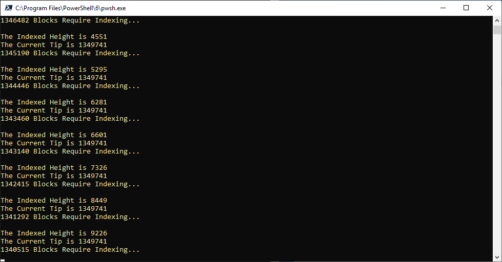{kind=link}
Once the synchronization and indexing have completed, the sidechain node will automatically be launched, this will also be evidenced in the PowerShell Core window.
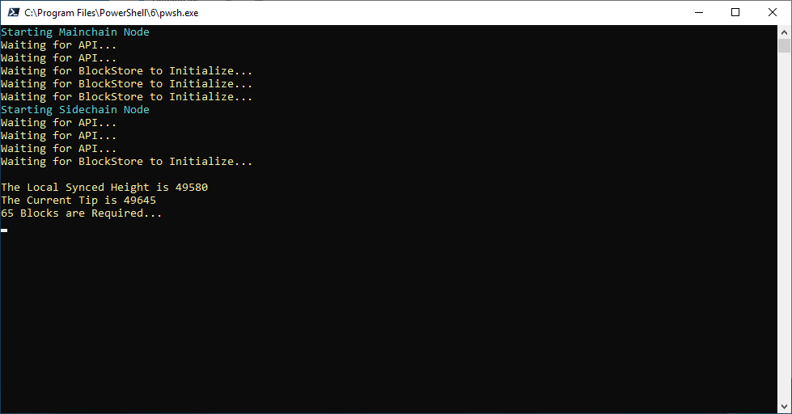{kind=link}
You can confirm that the sidechain node is operational by viewing your agent string in the sidechain node console.
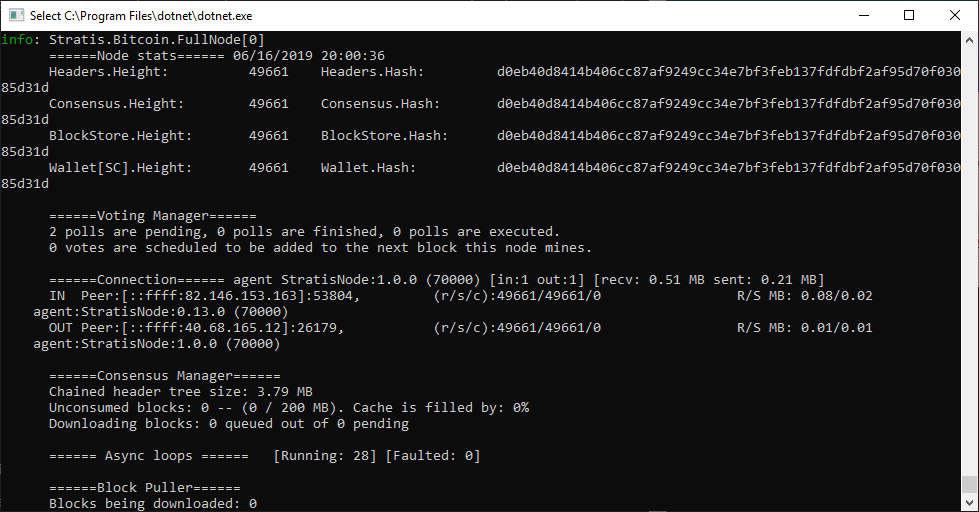{kind=link}
The agent string of a sidechain node is StratisNode:1.0.7.2 (80000)